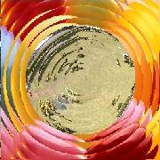

TransRipple
A gradually increasing water ripple that covers fully the Left Clip
by 1/3 overlap length is created. Thereafter the Right Clip emerges in the
center as a growing Ripple fully covering frame by 2/3 length. This ripple
then subsides (withdraws) over the Right Clip thus revealing it. The
wave length lambda and wave amplitude and origin of ripple may be specified.
All avisynth supported formats can be input.
RGB32, RGB24 YV12 and YUY2 colorspaces are supported by 2.5+ version.2.6 version supports all other planar formats as well
Details of parameters
| Description |
Name |
Type |
Limits |
Default |
| Left clip |
|
clip |
|
none |
| Right clip |
|
clip |
|
none |
| Overlapping frames or seconds time |
overlap |
integer |
not more than clip length , >2 frames. If -ve taken as time in seconds |
none |
| Wave length |
lambda |
integer |
more than 15 and less than 1/8 of frame diagonal |
40 |
| Wave amplitude |
amp |
integer |
between 2 and 12 |
8 |
| Origin of ripple |
origin |
string |
"center", "ne","nw", "se", "sw", "east", "west", "north", "south" |
"center" |
#Usage examples:-
TransRipple(Left,Right,-3,80,4)
TransRipple(Left,Right,-3, origin = 'west')
TransRipple(Left,Right, -3,amp=4)
TransRipple(Left,Right,-3,lambda=60)
Images during transition :
 |
 |
 |